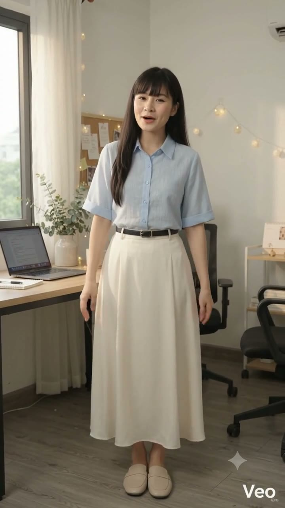
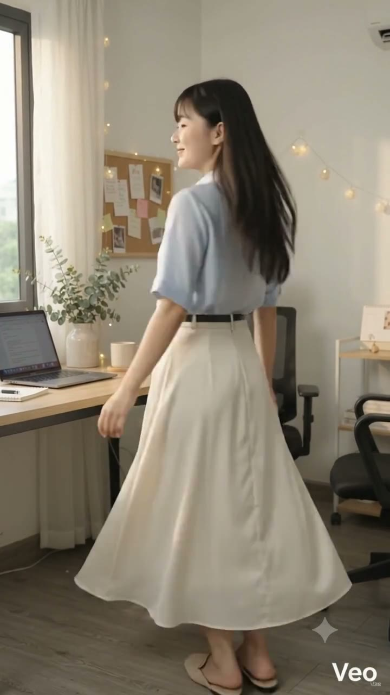

Set áo sơ mi xanh nhạt + chân váy dài kem đi làm: nhẹ nhàng, tiểu thư mà vẫn lịch sự

Sáng đi làm, Lisa mặc set áo sơ mi xanh nhạt + chân váy dài kem kèm đai lưng đen — áo sơ mi đũi mềm cổ nhọn, chân váy dài dáng A tới mắt cá, thắt đai lưng đen mỏng, đi giày mule be. 189 nghìn thôi, giảm từ 290 nghìn. Nhẹ nhàng, tiểu thư mà vẫn lịch sự — mặc đi làm hay đi café cuối tuần đều hợp. Bạn chấm set này mấy điểm?
Đọc trước khi mua: bài viết này là gợi ý phối đồ lấy cảm hứng từ các mẫu đang bán chạy trên Shopee. Lisa là nhân vật AI, nên bài viết không phải bài đánh giá sản phẩm Lisa đã mặc thật hay đã dùng thử. Giá, chất liệu và size cần kiểm tra lại trên trang bán trước khi mua. Link mua hàng:
· Set áo sơ mi xanh nhạt + chân váy dài kem, shop N.2.B Style Online — 189.000đ (gốc 290.000đ, −35%), 4,78 sao (286 đánh giá).
Một set đi làm đủ 3 món, mặc lên là gọn gàng mà vẫn nữ tính — áo sơ mi, chân váy dài và đai lưng:
Đứng toàn thân — áo sơ mi xanh nhạt, chân váy dài kem, đai lưng đen

Xoay nhẹ — chân váy dài dáng A xòe mềm, tới mắt cáNgồi bên bàn làm việc — cổ nhọn, khuy áo gọn, đai lưng đen mỏng
Vì sao set này hợp mặc đi làm?
Áo sơ mi đũi mềm, cổ nhọn lịch sự: áo sơ mi xanh nhạt chất đũi mềm, cổ nhọn + hàng khuy gọn gàng — mặc đi làm lịch sự, không cứng như sơ mi công sở truyền thống, màu xanh nhạt dịu mắt, tôn da.
Chân váy dài kem dáng A tới mắt cá: chân váy dài kem dáng A, dài tới mắt cá — che khuyết điểm chân, đi lại vẫn thoải mái, dáng A xòe nhẹ nên ngồi hay đứng đều không bị ôm sát, nhìn thon gọn mà vẫn nữ tính.
Đai lưng đen mỏng nhấn eo: đai lưng đen mỏng thắt ngang eo — vừa chia tỷ lệ áo và váy, vừa tạo điểm nhấn gọn gàng, nhìn eo thon hơn hẳn so với mặc suông không đai.
Giày mule be nhẹ nhàng: giày mule be cùng tông với chân váy — đi làm cả ngày không đau chân, màu be kéo dài chân, hợp cả đi làm lẫn đi café sau giờ làm.
Cách chọn set sơ mi + chân váy dài cho dáng nhỏ
Sơ mi ngắn tay, đừng chọn tay dài rộng: dáng nhỏ mặc sơ mi tay ngắn vừa vặn, gọn vai — tay dài rộng dễ nuốt dáng, nhìn lùng bùng, nhất là khi sơ vin với chân váy dài.
Váy dài tới mắt cá, đừng chọn váy chạm đất: váy dài quá gót dễ vướng chân, dáng nhỏ mặc váy chạm đất còn bị nuốt chiều cao — dài tới mắt cá là vừa đẹp, khoe được giày, chân nhìn dài ra.
Thắt đai lưng mỏng, đừng chọn đai to: đai lưng mỏng tạo điểm nhấn eo nhẹ nhàng — đai to bản dễ chia người thành hai khúc, dáng nhỏ mặc đai to càng lùn.
Mẹo mặc set này đẹp
Sơ vin gọn, kéo nhẹ phần trước: áo sơ vin gọn vào váy, kéo nhẹ phần trước tạo độ phồng tự nhiên — vừa gọn eo, vừa không bị cứng như đồng phục.
Túi xách nhỏ cùng tông be: túi xách nhỏ màu be hoặc trắng kem đi cùng set này là đủ — túi to, màu tối dễ phá mất vẻ nhẹ nhàng của cả set.
Tóc xõa thẳng hoặc buộc thấp: tóc dài xõa thẳng hoặc buộc thấp gọn gàng — hợp với cổ nhọn của áo sơ mi, nhìn tiểu thư mà vẫn gọn gàng đi làm.